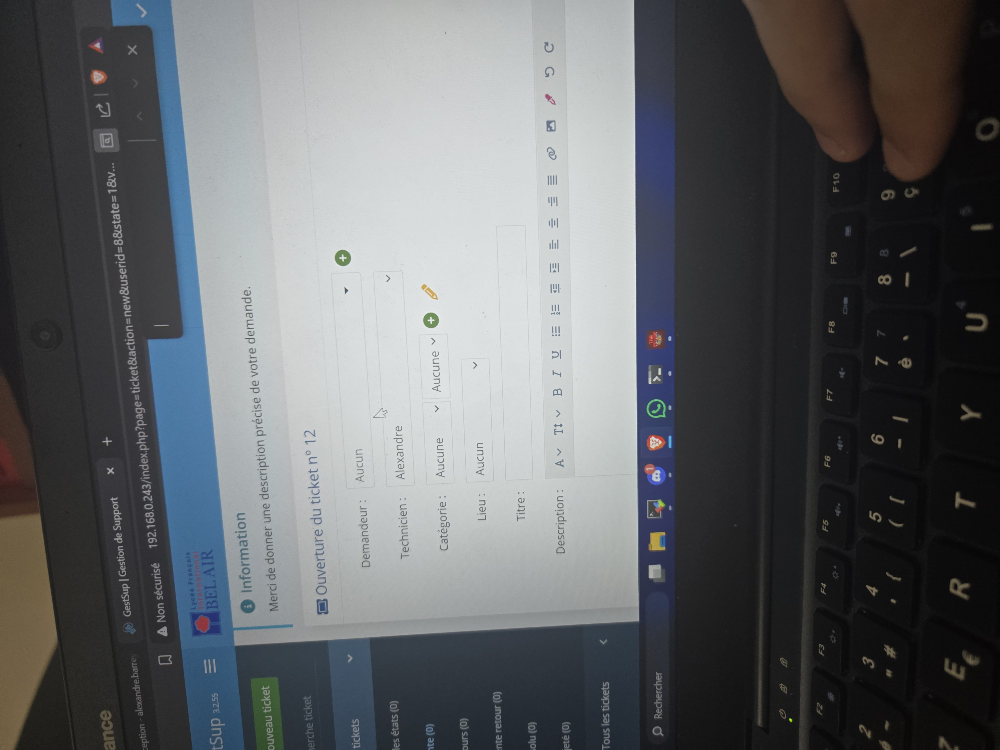

Déploiement Serveur Gestsup (Ticketing)
1. Contexte et Objectif
Mise en place d'une solution de helpdesk et de gestion d'incidents (WAMP/LAMP Stack). L'objectif est de centraliser et de suivre les demandes d'assistance des utilisateurs afin d'optimiser le temps de résolution de l'équipe informatique.
Installation et configuration du serveur (Apache, PHP, MariaDB) ainsi que personnalisation de l'outil Gestsup.
3. Compétences Validées
Bloc 1 : Support et mise à disposition de services IT.
- ✅ Suivre et orienter les demandes
- ✅ Gérer les incidents
- ✅ Travailler en mode projet
- ✅ Accompagner les utilisateurs
2. Preuves Techniques et Gestion de Projet (E6)


Photo 1 : Capture prouvant que le serveur web et la base de données sont liés et opérationnels.
Photo 2 : Diagramme de Gantt démontrant ma capacité à structurer les phases d'installation et de tests.